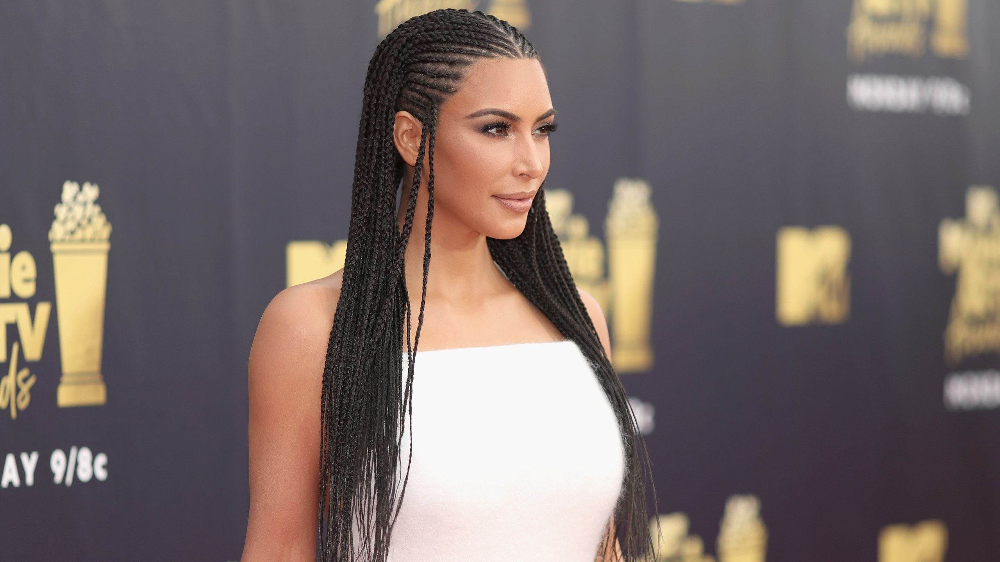

kim k. wears box braids to the mtv awards

Fulani braids are a hairstyle typically worn by Black women with natural hairstyles. Even in 2019, Black women face opression because of their hairstyles in the workplace and academia. Kim K. appropriates this hairstyle with pride, as she has with other cultural appropriation events. Natual hairstyle are not something that you can just take off and try out. Neither is black culture.